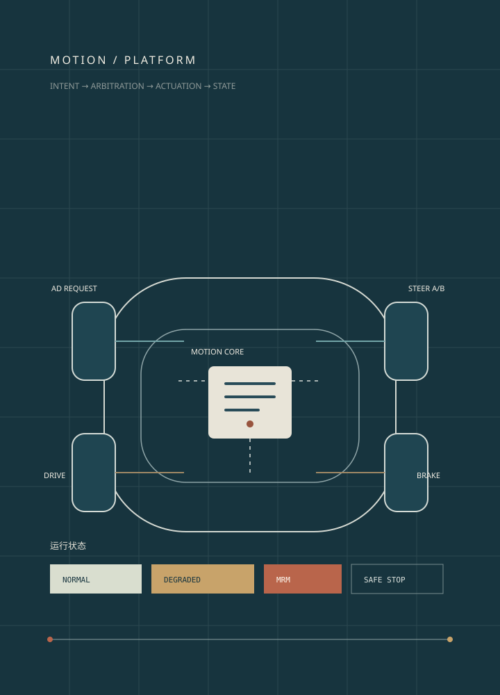

ASSIGNMENTS
四次作业入口
四次作业使用同一套系统边界和术语。作业 04 以城市路口低速左转为典型场景，承接前三次作业中的需求与安全约束。
线控底盘平台的层级定位与六层分析
明确系统位于整车与执行子系统之间，梳理任务、体系、整车、系统、子系统和模块之间的需求传递。
层级 / 边界 / 接口打开作业 →
业务需求与相关方需求定义
从无人化出行服务出发，给出 ConOps、OpsCon、BRS 与 StRS，并整理主要相关方之间的需求冲突。
BRS / StRS / 相关方打开作业 →
左前转向通道失效下的系统需求与安全架构
以 15 km/h 路口低速左转为验证切片，定义功能、性能、安全需求、控制结构和初始安全架构。
需求 / 架构 / 验证打开作业 →
运行场景分层、设计条件与安全风险分析
逐层梳理运营、道路、任务、系统和执行模块，给出正常运行条件、典型左转实例及风险场景列表。
场景 / ODD / 风险打开作业 →
完整汇报：从系统层级到运行场景
可直接演示的 16:9 HTML 汇报，支持方向键翻页、滚轮翻页和打印为 PDF。
